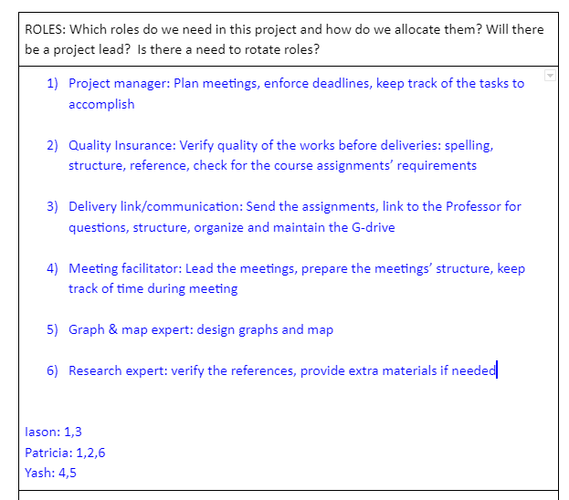

The focus of unit 6 was on the practical implications of security and risk standards. A number of standards were discussed such as GDPR and PCI-DSS but the real highlight was in the team project and the Risk Identification Report.
Reflection on teamwork for Risk Identification Report
Originally we were supposed to be 4 students in Group 5 but one of them never showed up so all of us had to eventually do an extra chunk of work. What I found particularly interesting was that the two other students Yash and Patricia knew already eachother and had cooperated before. This was an intresting dynamic because there was already a group formed and I was just the new one onboard. In such situations I always try to adapt to the norms of the existing group and I think its really difficult to change such norms after they have been established. This is something which concerned me a lot as I didnt want to appear to be trying to change their habits and norms. Luckily their established working pattern was convenient and flexible and I managed to adapt well. What I noticed however is that despite the group being already formed the group development dynamic were there quite in the way in which Tuckman (1965) has desribed them. It tooks us a couple of weeks and regular meeting to form as a team and probably we started norming close to the submission deadline of the first assignment and performing as a team during the work of the second assignment. What is perhaps interesting to reflect on is that setting up such a group online does follow Tuckmans model but the lack of physical contact and communication perhaps makes the process a bit slower and the development of trust takes longer time.
In the forming phase we agreed on who will do what, I took over a more project manager role as this is also my field in real life, this was also reflected in our team contract:

We also agreed on a regular meeting schedule every week and on using a common google drive repository for our work. Our communications channel was the whats app, sometimes communication was a bit challenging as Patricia lives in Canada , Yash in India, and myself in Germany.

Nevertheless, we managed to deliver on time and with good quality. Our communication over whats app would always intensify close to the submission dates and we should have exchanged hunderds of messages.


References
Tuckman, Bruce W (1965). "Developmental sequence in small groups". Psychological Bulletin. 63 (6): 384–399. doi:10.1037/h0022100. PMID 14314073.